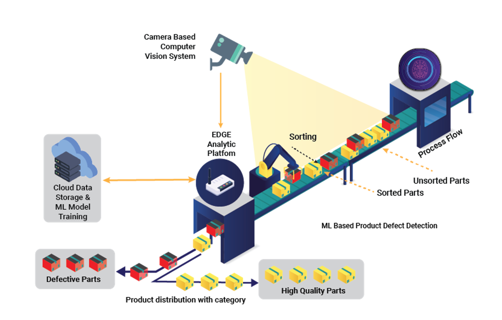
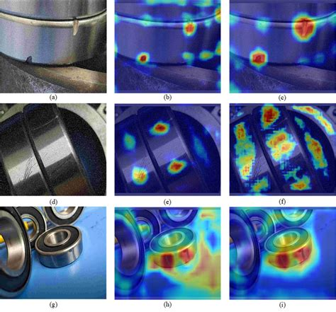

"Computer vision that understands what it sees."
A closed-loop visual intelligence system — cameras capture every product, edge hardware infers in real time, and a cloud backbone stores, trains, and continuously improves the model.

High-speed industrial cameras capture every unit at line speed — 100% coverage, no sampling. Multiple camera angles ensure no surface is missed.
On-premise inference hardware runs the detection model locally — sub-10ms decision latency. No cloud round-trip for production-line decisions.
The model classifies each unit as Good (OK) or Not Good (NG), identifies the defect type, localizes it spatially, and scores its severity — all in a single inference pass.
Defective units are physically sorted from the production flow by actuators triggered directly by the edge platform — before they reach packaging or downstream assembly.
Every detection event — pass or fail — is logged to cloud storage. New edge cases retrain the model on a rolling basis. The system becomes more accurate with every production run.
Beyond pass/fail binary. Our heatmap visualization maps defect intensity across the product surface — identifying not just the presence of damage, but its precise location, spread, and severity grade.
Defects are pinpointed to sub-millimeter precision on the product surface — enabling targeted rework rather than full rejection of salvageable parts.
Each detected anomaly is assigned a severity score from trace (cool tones) to critical (red). This drives tiered decisions: pass, rework, or scrap — automatically.
Multiple defect types on a single product are captured simultaneously — surface cracks, contamination, dimensional deviations — layered in a single heatmap view.
Aggregated heatmap data across batches reveals systemic quality drift — detecting process degradation before defect rates climb, enabling pre-emptive process correction.

AI Heatmap Analysis · Surface Defect Severity Mapping on Industrial Components
"The human eye misses one defect
in every thousand. The camera
never does."
Three computational stages transform raw camera frames into actionable quality decisions — faster than any human inspector.
High-frame-rate cameras feed raw pixel data to the edge processor. Lighting normalization, lens distortion correction, and frame alignment are applied before inference — ensuring consistent inputs regardless of environmental variation.
120fps · Multi-angleA convolutional neural network trained on thousands of product-specific defect samples runs inference on each frame. The model simultaneously classifies defect type, localizes it via bounding box, and scores severity through gradient-weighted heatmap generation.
CNN · <10ms latencyThe inference result triggers a real-time decision: sort the unit, flag for rework, or allow it to continue downstream. Result data is logged, annotated images are stored, and the production quality dashboard is updated — all within the same inference cycle.
Real-time · Auto-sortFour industries where human inspection is too slow, too inconsistent, or too expensive to scale — and where machine vision changes the outcome.
Printed circuit boards contain hundreds of solder joints, components, and traces per unit. Missing components, solder bridges, and cold joints are invisible at line speed to any human inspector.
A batch of 10,000 PCBs runs at 8 units/second. The vision system detects a cold solder joint on pin 14 of a capacitor — 0.4mm in diameter — across 34 units in the batch. All 34 are sorted before downstream assembly. Total inspection time: 21 minutes.
Pharmaceutical packaging carries regulatory and patient safety requirements that tolerate zero error — mislabeled doses, missing barcodes, or incorrect lot numbers carry severe consequences.
A label printing machine experiences a 0.3mm misalignment drift mid-run. The vision system detects the barcode becoming unreadable after unit 1,840 — immediately halting the labeling station and alerting the operator before any non-compliant units reach the packaging line.
Automotive OEMs apply 5–7 paint layers per body panel. Inclusions, runs, orange peel, and micro-scratches are near-invisible to the naked eye under standard lighting — but catastrophic to brand quality.
A full vehicle body exits the paint booth. The multi-angle vision rig completes a 360° surface scan in 8 seconds — flagging 3 micro-inclusions on the hood, 1 orange-peel zone on the driver door, and a 2cm paint run on the rear quarter panel. All coordinates logged for targeted rework.
Manual grading of food products is inconsistent, labor-intensive, and a hygiene risk. High-volume throughput lines cannot be staffed to inspect every individual unit.
A fruit processing line runs at 12 tons/hour. The vision system grades each piece across 6 quality parameters — color, size, surface blemish, bruising, shape deviation, and foreign matter — sorting output into 4 quality tiers in real time. Zero contaminated units reach packaging.
Four metrics that define what Zero Eleven Visual Intelligence delivers — measured across production deployments, not simulations.
Near-perfect defect identification across all defect types — from sub-millimeter surface inclusions to dimensional deviations at line speed.
Inspection that previously required 45 minutes of manual review now completes in under 10 seconds. Throughput bottlenecks are eliminated entirely.
Post-deployment tracking across production runs shows zero missed defects passing through a calibrated Zero Eleven vision system to end customers.
Every single unit inspected — not a statistical sample. No unit leaves the line without a complete pass/fail record attached to its production data.